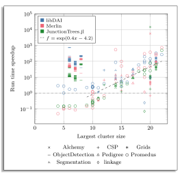

Performance evaluation
The graph below illustrates a comparison of the runtime performance of TensorInference.jl against Merlin [marinescu2022merlin], libDAI [mooij2010libdai], and JunctionTrees.jl [roa2022partial] libraries, specifically for the task of computing the marginal probabilities of all variables. Both Merlin and libDAI have previously participated in UAI inference competitions [gal2010summary][gogate2014uai], achieving favorable results. Additionally, we compared against JunctionTrees.jl, the predecessor of TensorInference.jl. The experiments were conducted on an Intel Core i9–9900K CPU @3.60GHz with 64 GB of RAM. Performance comparisons for other tasks will be added in the near future.
The benchmark problems are arranged along the x-axis in ascending order of complexity, measured by the induced tree width. On average, TensorInference.jl achieves a speedup of 20 times across all problems. Notably, for the 10 most complex problems, the average speedup increases to 148 times, highlighting its superior scalability. The graph features a fitted linear curve in log-space to underscore the exponential improvement in computation time achieved by TensorInference.jl in comparison to the other alternatives. This speedup is primarily due to our package's unique approach: while traditional solvers typically focus only on minimizing space complexity (as quantified by the induced tree width), TensorInference.jl is designed to optimize for both time and space complexity.
References
- gal2010summaryGal Elidan and Amir Globerson. Summary of the 2010 UAI approximate inference challenge. 2010. [Online]. Available: https://www.cs.huji.ac.il/project/UAI10/summary.php [Accessed: 11 September 2023].
- gogate2014uaiVibhav Gogate. UAI 2014 Probabilistic Inference Competition. 2014. [Online]. Available: https://www.ics.uci.edu/~dechter/softwares/benchmarks/Uai14/UAI2014Inference_Competition.pdf [Accessed: 11 September 2023].
- marinescu2022merlinRadu Marinescu. Merlin. 2022. [Online]. Available: https://www.ibm.com/opensource/open/projects/merlin/ [Accessed: 11 September 2023].
- mooij2010libdaiJoris M. Mooij. libDAI: A Free and Open Source C++ Library for Discrete Approximate Inference in Graphical Models. Journal of Machine Learning Research, 11:2169-2173, Aug 2010. [Online]. Available: http://www.jmlr.org/papers/volume11/mooij10a/mooij10a.pdf.
- roa2022partialMartin Roa-Villescas, Patrick W.A. Wijnings, Sander Stuijk, Henk Corporaal. "Partial Evaluation in Junction Trees". In: 2022 25th Euromicro Conference on Digital System Design (DSD), pp. 429-437, 2022. doi: 10.1109/DSD57027.2022.00064